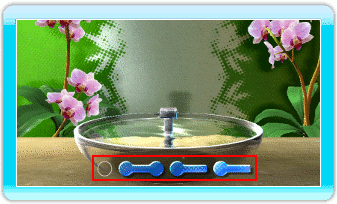
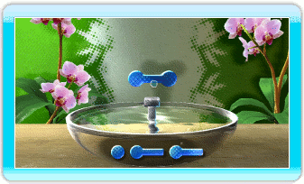
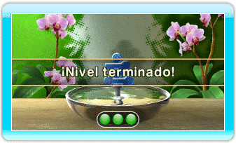

10 |
Cómo jugar |
 |
|
Cómo jugar

Las formas disponibles están situadas en el área indicada arriba. Apunta a cualquiera de las formas opacas con el mando de Wii y pulsa  para recogerla. Luego apunta a la pantalla con el mando de Wii y vuelve a pulsar para colocarla. para recogerla. Luego apunta a la pantalla con el mando de Wii y vuelve a pulsar para colocarla.

Para terminar un nivel, construye una pila estable con todas las formas disponibles.

Cuando todas las formas disponibles hayan sido colocadas y las 3 luces estén encendidas, el nivel habrá terminado. |
 |
 |
 |